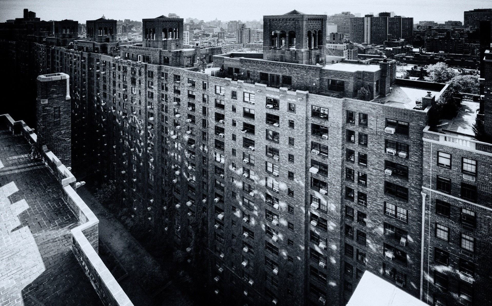
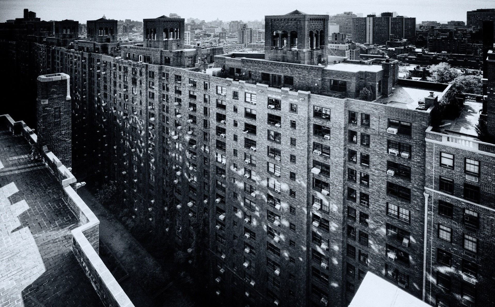

About Us
We are the Scinditur Сonscientiae Community. Our server is designed for mentally lost people. Our Discord server is a very cosy place to chat and receive much satisfaction while sitting in voice channels. We have strict moderation and toxic people protection to provide our members the best experience.
On our server you can find many sub-communities on different games, but priority games are Genshin Impact and DOTA 2.
Discord Server
Here are our Discord server
 
